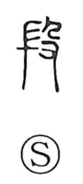

段

Kun: | On: dan
step ・ section ・ grade ・ stage
Explanation
段 shows raw material being struck with 殳, a staff-like implement held in the hand. The left side represents unrefined metal in layered pieces. Beating works the material into thinner sections and prepares it for making an object. 段 is the earlier graph of 鍛, ‘forge.’
The layered appearance of the material gives a second path of meaning. Something formed in successive layers can be divided into sections or levels. 段 therefore comes to mean a step, tier, stage, or grade. The levels of a staircase and the stages of a process continue this image of a whole arranged in distinct, successive parts.